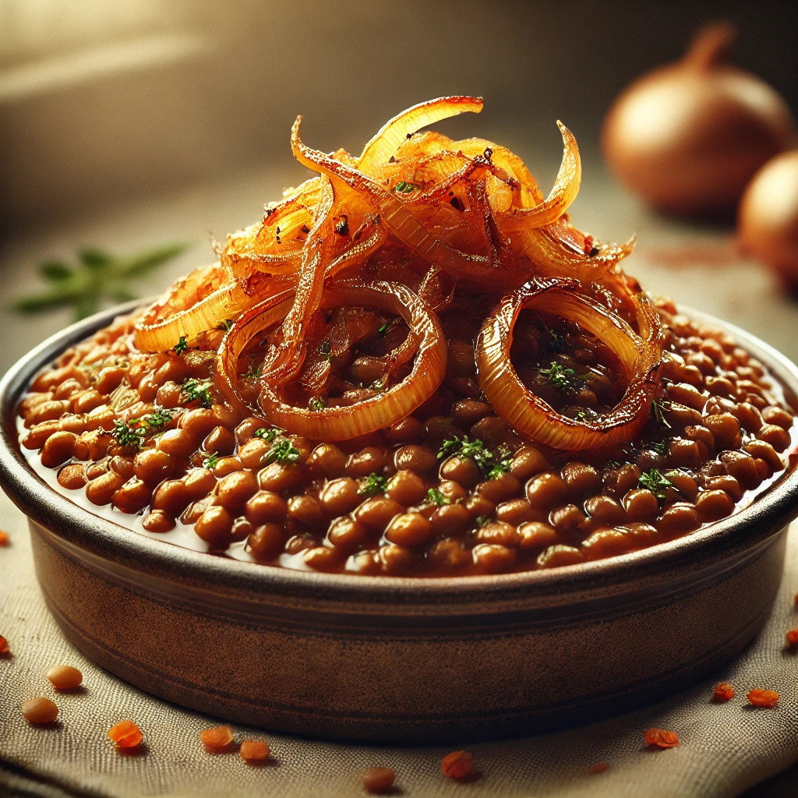

Mudjaddara

A delicious healthy rice dish
Mudjaddara is a dish from Irak, it has all of the flavor with none of the trouble.
Ingredients:
The main dish:
- 4 medium red onions
- 2tbsp garlic paste
- 1 cup of lentils
- 1 cup of rice
- 3,5 cups of water
- sour cream
- Parsley for decoration
Spices:
- Bayleaves
- Cinnamon
- Cummin
- Coriander
Steps to follow:
-
The main dish:
- Properly rinse the rice and the lentilsmultiple times
- Start with cutting 2 onions and letting them fry until golden in your pot then add the garlic paste
- Add the cleaned lentils, salt, and the 3,5 cups of water, set to medium high heat, let simmer for around 30mn and go prepare the topping
- You have prepared your topping, now add the rice and the spices
- Lower the heat and let it cook until all the liquid is gone and the rice is done
-
The topping:
- Cut the two remaining onions in semi-circles
- Throw them in a pan on medium low heat, and let them sear until crispy
- set aside for presentation
-
Presentation:
- In a deep dish pour yourself mudjaddara
- Add your fried onions on top
- Drizzle some parsley and add sour cream on the side
- Enjoy!
Return to main page